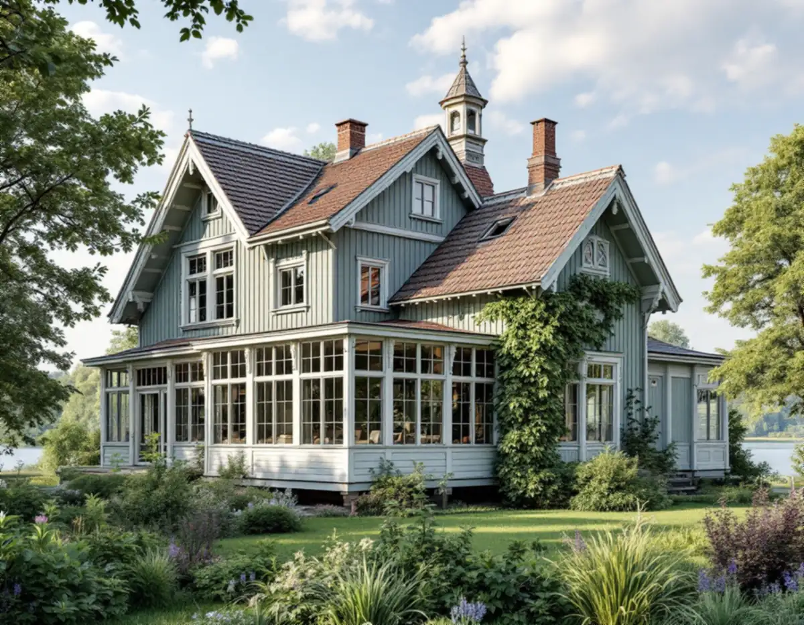
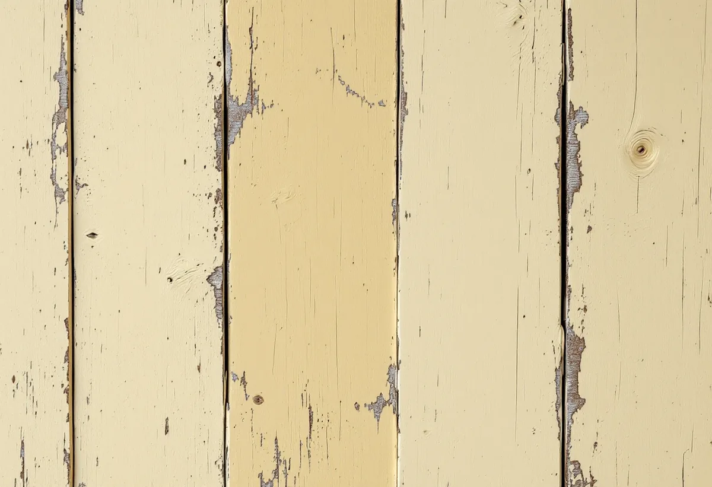

Platsbesök
Vi tittar på vilka delar som är nya, vilka som behöver lagas och vilken färg som sitter på resten.

När ruttna bräder, en vindskiva eller en hel vägg har bytts ut på ett äldre hus i Huddinge ska det nya träet målas så att det håller och så att lagningen syns så lite som möjligt.
Beskriv jobbet kort.
Något blev fel. Kontrollera uppgifterna eller ring 08 12 410 276.
Vi tittar på jobbet på plats innan du får offert.
Du ser vad som ingår och vad det kostar.
Vi drar av ROT direkt och sköter ansökan.
Geal Entreprenad AB, Bromma. Org.nr 559303-7566.

Geal Entreprenad AB målar fasader i Huddinge och tar hand om både de nya delarna och den gamla färgen runt omkring.
Huddinges kulturmiljöprogram beskriver sommarnöjen från 1880–1920-talen som stora villor i trä med varierande arkitektur, glasverandor och snickarglädje, i nationalromantik och jugendstil. Träpanel, spröjsade fönster, torn och brutna tak hör till karaktärsdragen, och programmet råder att byggnadernas ursprungliga arkitektoniska uttryck ska bevaras och vara vägledande vid om- och tillbyggnader.
På landsbygden är stående locklistpanel det vanligaste fasadmaterialet. Falurött dominerar, men programmet nämner också slam- och oljefärger i ljusa kulörer på huvudbyggnaderna. Det är på de här husen som bräder, foder och vindskivor förr eller senare behöver bytas, och när det händer är det den gamla fasaden som det nya träet ska smälta in i.
Riksantikvarieämbetets handbok om byggnadsmåleri beskriver hur skadat trä, till exempel rötskadat ändträ, lagas med friskt trä. Virket ska inte kapas för snålt, och man ska se noga till att det är friskt där det kapas. Grått och luddigt bart trä, så kallat blåträ, tas bort genom hårdskrapning och slipning innan något målas.
Mindre sprickor kittas med linoljekitt efter grundningen. Kittet ska bara läggas i springan och inte spacklas ut på träet, och sprickor som är bredare än 6 millimeter lagas i stället med träkilar. Huddinge kommun skriver att du inte behöver bygglov för att renovera fasaden om du byter befintligt material mot samma sorts material med samma färg, så länge detaljplanen inte säger något annat. Därför beställer vi samma panelprofil som sitter på huset.
Nytt trä med linoljefärg behandlas enligt handboken med grundning, kittning av mindre sprickor och håligheter, mellanstrykning och slutstrykning. Grundfärgen förtunnas och ska inte täcka helt, och virket ska ha en fuktkvot under 15 procent. Ska de nya delarna i stället ha en modern täckfärg skriver Boverket att akrylatfärg kräver en grundfärg av alkydolja. Den grundfärgen användes inte i alla fall, och då fuktades panelen upp kraftigt av regn, med fuktskador som följd.
Är fasaden målad med slamfärg räcker det normalt med en strykning på det nya träet, och två om färgen är mycket tunn. Riksantikvarieämbetet påpekar att lagningar med nytt virke i en gammal slamfärgad fasad ger ett ljusare intryck till en början, men att kulören jämnas ut relativt snart. Ibland behöver de ilagda partierna målas om efter ett par år.
När den gamla färgen har skrapats runt lagningarna avgör skadorna hur resten av väggen behandlas. Är bara omkring 10 procent av färgskiktet skadat räcker det enligt handboken att grunda de skadade partierna. Är 30–40 procent skadat bör hela ytan grundas, och mycket illa medfarna ytor grundas med en väl utspädd grundfärg.
Först måste vi veta vilken färg som redan sitter på väggen. Länsstyrelsernas blad om målning på trä påminner om att plastfärg inte förenas med underlaget utan bildar en hinna som måste bort innan linoljefärg kan användas. Mer om kulörer och invändig målning finns under målare i Huddinge, om att byta fasadmaterial under fasadrenovering i Huddinge och om målning i stort under målare.
Vi tittar på vilka delar som är nya, vilka som behöver lagas och vilken färg som sitter på resten.
Lagning, skrapning, grundning och strykningar redovisas var för sig.
Rötskadat trä byts mot friskt, och breda sprickor lagas med träkilar.
Lös färg och blåträ tas bort, och spikar som har krupit upp slås i.
Nytt trä grundas, och resten av väggen bättras eller grundas efter skadornas omfattning.
Fasaden stryks i den färgtyp den redan har, och vi går igenom resultatet med dig.
Skatteverket räknar både att reparera fasader och att måla dem som rotarbete på ett småhus, liksom att montera och montera ner ställningen. Lagning av panel och målning kan alltså ingå i samma avdrag. På ett radhus som är bostadsrätt ger arbetet på fasaden inget avdrag.
Avdraget är 30 procent av arbetskostnaden, högst 50 000 kr per person och år och högst 75 000 kr tillsammans med rutavdrag. Färg, material och resor ger inget avdrag. Avdraget görs direkt på fakturan.
Hur mycket trä som behöver lagas eller bytas, hur stor del av den gamla färgen som är skadad och om hela väggen behöver grundas styr mest. Efter ett kostnadsfritt platsbesök får du ett skriftligt kostnadsförslag.
Fasad, fönster och invändig målning.
Målare i Stockholm →Takbyte, takbesiktning och plåtarbeten.
Takläggare i Huddinge →Stuvsta, Snättringe och Skogås.
Takrenovering i Huddinge →Avlopp, egen brunn och ritningar.
Attefallshus i Huddinge →Grannar, tomtgräns och lovärendet.
Byggföretag i Huddinge →Egnahem, grupphus och permanentade stugor.
Badrumsrenovering i Huddinge →Villor, grupphus och fritidshus i Huddinge.
Fasadrenovering i Huddinge →Egnahem, grupphus och 70-talsvillor.
Fönsterbyte i Huddinge →Okopplade bågar, tätning och lagning av bottenstycken.
Fönsterrenovering i Huddinge →Grupphus, radhus och kedjehus i Huddinge.
Golvläggare i Huddinge →Slipa golvet och byt ytbehandling.
Golvslipning i Huddinge →Grupphus, egnahem och stugor.
Köksrenovering i Huddinge →Fasad, fönster och rum i Huddinge.
Målare i Huddinge →Rännor, dagvatten och brutna tak.
Plåtslagare i Huddinge →Altaner, förråd och gäststugor.
Snickare i Huddinge →Tyngre tak, stugor och landsbygd.
Takbyte i Huddinge →Ny tapet på lagad spännpapp.
Tapetsering i Huddinge →Råd för tre epoker av småhus.
Tillbyggnad i Huddinge →Rekordårens hus inifrån och ut.
Totalrenovering i Huddinge →Eller ring 08 12 410 276, mån–fre 08–17.
Beskriv jobbet kort.
Något blev fel. Kontrollera uppgifterna eller ring 08 12 410 276.